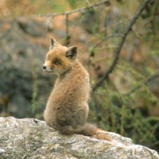
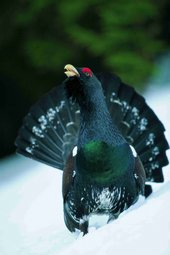

Il Parco Naturale Monte Verde gode di una ricchezza faunistica straordinaria, grazie all’integrità e varietà ambientale del suo territorio. Nell’area sono presenti tutte le specie caratteristiche delle Alpi, tra le quali spicca l’orso bruno (Ursus arctos), animale simbolo del Parco giunto sull’orlo dell’estinzione e oggi in espansione grazie ad un apposito intervento di reintroduzione. Assenti gli altri “grandi carnivori” (lupo e lince), sono ben diffusi la volpe (Vulpes vulpes), il tasso (Meles meles), la faina (Martes foina), la martora (Martes martes), l’ermellino (Mustela erminea) e la donnola (Mustela nivalis).
Particolarmente considerevole la presenza degli ungulati altoalpini. Oltre ad una consistente popolazione di camoscio (Rupicapra rupicapra), il Parco annovera una colonia di stambecco (Capra ibex) frutto di un pluriennale progetto di reintroduzione. Tra gli ungulati sono presenti anche il cervo (Cervus elaphus), il capriolo (Capreolus capreolus) ed il muflone (Ovis musimon), quest’ultimo frutto di introduzioni effettuate a partire dagli anni 70 del secolo scorso.
volpe (Vulpes vulpes)
gallo forcello (Tetrao tetrix)
Altrettanto ricca e interessante la presenza di roditori: tra i più diffusi e caratteristici lo scoiattolo (Sciurus vulgaris) e la marmotta (Marmota marmota). Discrete anche le popolazioni dei lagomorfi, lepre comune (Lepus europaeus) e lepre alpina (Lepus timidus).
Tra i rapaci, nidificano all'interno del territorio del Parco l'aquila reale (Aquila chrysaetos), la poiana (Buteo buteo), l'astore (Accipiter gentilis), lo sparviere (Accipiter nisus), il falco pecchiaiolo (Pernis apivorus) e il gheppio (Falco tinnunculus). Solo occasionale, invece, la presenza del gipeto (Gypaetus barbatus). Di particolare interesse ecologico, oltre ai picidi, sono anche i rapaci notturni, quali l'allocco (Strix aluco), il gufo comune (Asio otus), la civetta capogrosso (Aegolius funereus) e la civetta nana (Glaucidium passerinum).
Per quanto concerne l'erpetofauna, sono da segnalare le specie più tipiche dell’ambiente alpino, le quali mostrano particolari adattamenti alle condizioni ambientali d’alta montagna: tra gli anfibi, il tritone alpestre (Triturus alpestris) e la rana di montagna (Rana temporaria); tra i rettili, la lucertola vivipara (Lacerta vivipara), l’aspide (Vipera aspis) e il marasso (Vipera berus).
Per l’ittiofauna, i numerosi laghi e corsi d’acqua dell’area protetta ospitano i rappresentanti tipici delle acque fredde, come il salmerino alpino (Salvelinus alpinus), la trota marmorata (Salmo [trutta] marmoratus) e la trota fario (Salmo [trutta] trutta).